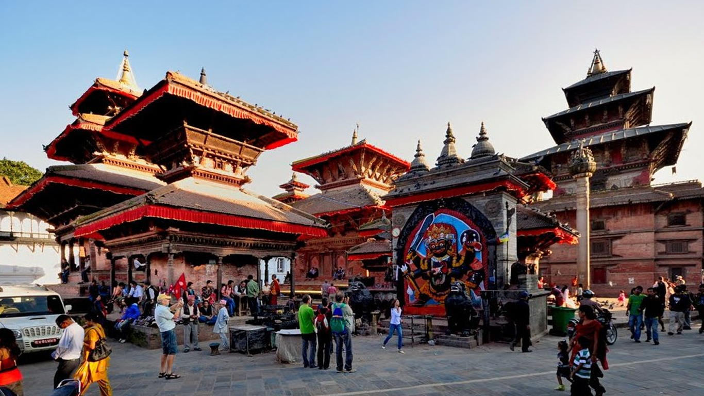
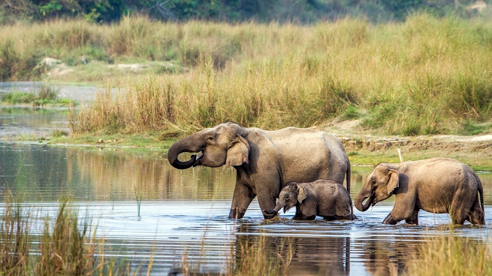

Kathmadu
Kathmandu, Nepal's capital, is set in a valley surrounded by the Himalayan mountains. At the heart of the old city’s mazelike alleys is Durbar Square, which becomes frenetic during Indra Jatra, a religious festival featuring masked dances. Many of the city's historic sites were damaged or destroyed by a 2015 earthquake. Durbar Square's palace, Hanuman Dhoka, and Kasthamandap, a wooden Hindu temple, are being rebuilt. ― Google
Pokhara
Pokhara is a city on Phewa Lake, in central Nepal. It’s known as a gateway to the Annapurna Circuit, a popular trail in the Himalayas. Tal Barahi Temple, a 2-story pagoda, sits on an island in the lake. On the eastern shore, the Lakeside district has yoga centers and restaurants. In the city’s south, the International Mountain Museum has exhibits on the history of mountaineering and the people of the Himalayas. ― Google
Chitwan
Chitwan District is one of 77 districts of Nepal, and takes up the southwestern corner of Bagmati Province. Bharatpur, largest city of Nepal after Kathmandu, is its administrative centre. It covers 2,238.39 km², and in 2011 had a population of 579,984 people. - Google
Manang
Manang is a town in the Manang District of Nepal. It is located at 28°40'0N 84°1'0E with an altitude of 3,519 metres. According to the preliminary result of the 2011 Nepal census it has a population of 6,527 people living in 1,495 individual households. Its population density is 3 persons/km². Wikipedia
Rara Lake

Rara Lake also known as Mahendra Lake is the largest fresh water lake in the Nepalese Himalayas. It is the main feature of Rara National Park, located in Jumla and Mugu Districts of Karnali Province. Rara National Park stretches over 106 km². Wikipedia
Annapurna Circuit
The Annapurna Circuit is a trek within the mountain ranges of central Nepal. The total length of the route varies between 160–230 km, depending on where motor transportation is used and where the trek is ended. This trek crosses two different river valleys and encircles the Annapurna Massif. Wikipedia